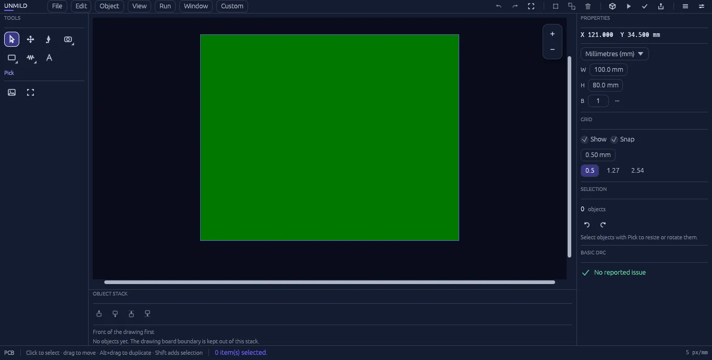
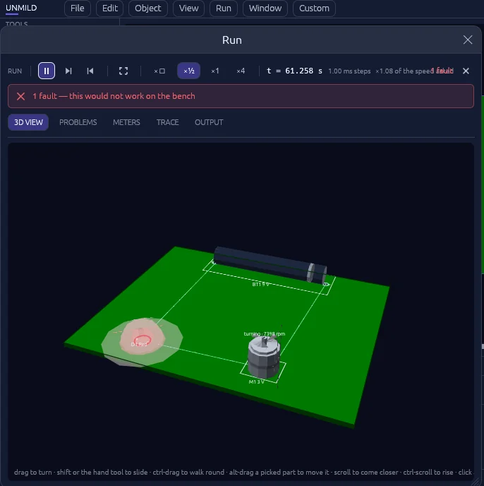

Windows desktopPCB design & reviewA product by UNMILD

The Designer workspace / PCB layoutActual product screenshot
From layout to handoff
Keep the board at the centre of the work.
Place the parts, make the connections, and inspect the physical result. Keep the details connected to the same project.
01 / Design
Build the board, one decision at a time.
Place components, route connections with Setu, shape the board outline, and adjust layers and object properties. Saad provides a searchable component library for placing the parts your project needs.
02 / Review
See what the layout becomes.
Live 3D puts the physical board and its components in view. Run brings supported component states, pin activity, readings, and reported issues into the review process.
03 / Firmware
Give the hardware its behaviour.
Mool brings embedded C/C++ work into the board project. Select a supported microcontroller and use a matching local compiler or toolchain to build its target image.
04 / Release
Prepare the manufacturing handoff.
Review design checks and export the board’s manufacturing data, including Gerber artwork and drilling output. Keep the final files together for fabrication and review.

Live 3D / Review components in the context of the board.Unmild Designer
A few useful details.
Who is Unmild Designer for?
People working on electronic hardware who want PCB design, physical review, and manufacturing output in a desktop project workflow.
What do I need for Mool?
A supported microcontroller in the project and the matching compiler or toolchain installed on your Windows machine.
Where can I find full features and installation information?